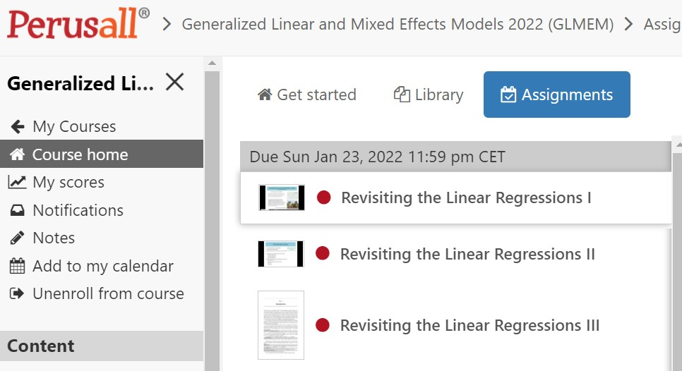
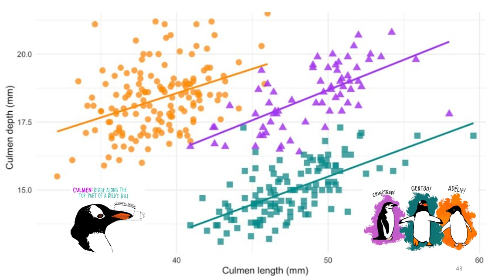

\(\mathbb{S}\) stands for STATISTICS
Practical knowledge of statistics is a fundamental skill for researchers in all scientific disciplines. The recent growth of Big Data Applications and Data Science only enhances the need for students to have solid theoretical knowledge of statistical analysis to help them understand their own data as well as the analyses performed by others.
The aim of Statistics I is to engage you with the fundamental concepts of statistical analysis and basic tools in statistical analysis using descriptive and univariate analysis, and research data management. Starting with the theoretical background of statistics, students are taught to engage critically with data-set characteristics; samples and populations, sampling strategies, and correlations. Subsequently, characteristics of the data in the data-set are discussed, dealing with measurement levels, central tendency, dispersion, distributions, and generalisations using the central limit theorem. The final part of the course focuses on statistical inference using techniques such as: t-test, proportion test, and an introduction to linear regression.
Upon the successful completion of this course, I hope you will be able to achieve three things:
The course is designed to follow the flipped-classroom approach. Readings and videos of the lectures are available before the course begins. You will be expected to read the relevant chapters in the textbook, watch the videos, and comment on them in Perusall PRIOR to attending the course. During the course itself, you will work on quizzes and lab assignments, which you may then submit at the end of each day.
To prepare for the course, please complete the preparation assignments, all available on the Perusall platform. You can find the assignments in Nestor under Assignments. You then need to click on the title of the item: CLICK ME to access Perusall.
Completing the assignment involves watching the video and reading the text before the assigned deadlines.

You can access RStudio in three ways:
Using the Remote Desktop
Knitting to a pdf
To knit a pdf, you will need to run the following in your console-window. First, you need to install the package tinytex. You do that by first installing the tinytex package and then running the tinytex::install_tinytex() command, as you can see in the figure on the right hand side. You should now be able to knit your RMarkdown into a pdf file.
To develop your R programming skills, there are a variety of free resources you can use, such as the SICSS bootcamp, Harvard’s famous R Basics course, or Stanford’s R Programming fundamentals. If you speak German, this site is quite nice.
An introduction to visualization using ggplot is available in this playlist.
For RMarkdown, have a look at piping hot data
